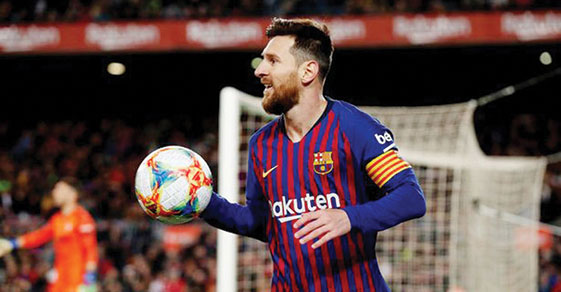

ঢাকা, সোমবার, 4 January 2019, ২৯ পৌষ ১৪২৫, ৫ জমাদিউল আউয়াল ১৪৪০ হিজরী
Online Edition

আজ থেকে আবার ঢাকায় ফিরছে বিপিএল
প্রকাশিত: বৃহস্পতিবার ৩১ জানুয়ারি ২০১৯ | প্রিন্ট সংস্করণ

স্পোর্টস রিপোর্টার : বিপিএলের চট্টগ্রাম পর্ব শেষ। আজ থেকে আবার শুরু ঢাকার শেষ পর্ব। লিগ পর্বের আর আছে চারটি ম্যাচ। এরই মধ্যে ঠিক হয় গেছে প্লে-অফে ওঠা তিন দল। এখন অপেক্ষা চতুর্থ দলের। চট্টগ্রাম পর্ব শেষে প্লে-অফ নিশ্চিত করা দল তিনটি হলো রংপুর রাইডার্স, কুমিল্লা ভিক্টোরিয়ান্স ও চিটাগং ভাইকিংস। রাজশাহী কিংস ও ঢাকা ডায়নামাইটস থেকে একটি দল উঠবে প্লে-অফে। আজ দিনের প্রথম ম্যাচে দুপুর দুইটায় মাঠে নামছে কুমিল্লা ভিক্টোরিয়ান্স বনাম ঢাকা ডাইনামাইটস। দিনের অপর ম্যাচে সন্ধ্যা সাতটায় মাঠে নামবে চিটাগং ভাইকিংস বনাম সিলেট সিক্সার্স। এদিকে খুলনা টাইটান্সের পর ছিটকে গেছে সিলেট সিক্সার্সও। ফলে ঢাকা আর রাজশাহীর মধ্যে একটি দল জায়গা পাবে শেষ চারে। চলতি আসরে দুর্দান্ত পারফর্ম করে দীর্ঘ সময় টেবিলের শীর্ষে ছিল সাকিব আল হাসানের ঢাকা। কিন্তু চট্টগ্রাম পর্বেও আগে চিটাগংয়ের কাছে শীর্ষস্থান হারায় তারা। এই পর্বে নানা উত্থান-পতন শেষে প্লে-অফ নিশ্চিত করে ফেলে তিন দল। ঢাকার এই পর্বে নিশ্চিত হবে প্লে-অফের চতুর্থ দলটি। রাজশাহী তাদের ১২টি ম্যাচ খেলে ফেলেছে। ফলে তাদের আর ম্যাচ নেই। অন্যদিকে দুইটি করে ম্যাচ বাকি আছে ঢাকা ও কুমিল্লার। বাকি দলগুলোর একটি করে ম্যাচ বাকি আছে। তবে এই পর্বে মূলত চোখ থাকবে ঢাকার ম্যাচের দিকে। তাদের জয় পরাজয়ের ওপর প্লে-অফের চতুর্থ দল নিশ্চিত হবে। সাকিবের দলটির পয়েন্ট এখন ১০। পরের দুইটি ম্যাচ জিতে গেলে ১৪ পয়েন্ট নিয়ে সরাসরি প্লে-অফ নিশ্চিত হয়ে যাবে তাদের। আর যদি একটি ম্যাচ জেতে সেক্ষেত্রে রানরেট বিবেচনায় আসবে। এই মুহূর্তে রানরেটে সুবিধাজনক অবস্থায় আছে ঢাকাই। ঢাকার রানরেট ০.৯৫৮, আর রাজশাহীর -০.১৮৭। এদিকে রাজশাহীর জন্য সমীকরণটা হচ্ছে ঢাকা যদি তাদের বাকি দুই ম্যাচ হেরে যায়, তবে মেহেদী হাসান মিরাজের দলটি সরাসরি চলে যাবে প্লে-অফে। ঢাকার পরবর্তী দুই ম্যাচ যথাক্রমে কুমিল্লা ও খুলনার সাথে। কুমিল্লা এরই মধ্যে প্লে-অফ নিশ্চিত করে ফেলেছে। অন্যদিকে আগেই টুর্নামেন্ট থেকে ছিটকে গেছে খুলনা। ফলে এই দুই ম্যাচে সাকিবদের তীব্র প্রতিদ্বন্দ্বিতার মুখোমুখি হওয়ার সম্ভাবনা কিছুটা কম। এর অর্থ হচ্ছে আগামী দুই ম্যাচেই ঢাকাকে নিজেদের ভাগ্য গড়ে নিতে হবে। এদিকে নিজেদের ভাগ্যের জন্য রাজশাহীকেও তাকিয়ে থাকতে হবে ঢাকার দিকে। যদি ঢাকার ব্যর্থতা তাদের শিকে ছেড়ে। এবার সবার ওপরে থেকে চট্টগ্রামে খেলতে এসেছিল চিটাগং ভাইকিংস। শেষ পর্যন্ত রংপুর রাইডার্স এবং কুমিল্লা ভিক্টোরিয়ান্সের পর তৃতীয় দল হিসেবে শেষ চারে নাম লিখিয়ে চট্টগ্রাম পর্ব শেষ করেছে মুশফিকুর রহীমের চিটাগং ভাইকিংস। তবে এখন অপেক্ষা চতুর্থ দলের। দলটি হতে পাওে ঢাকা ডায়নামাইটস অথবা রাজশাহী কিংস। রাজশাহী শেষ ম্যাচে সিলেট সিক্সার্সকে ৫ উইকেটে হারালেও মিরাজের দলের শেষ চারে পা রাখার সম্ভাবনা তুলনামূলক কম। কারণ তাদের আর কোনো ম্যাচ নেই। অপর দিকে ঢাকার দুটি ম্যাচ বাকি। অন্তত একটিতে জিতলেও ঢাকাই শেষ চারে নাম লেখাবে। তখন ঢাকা ও রাজশাহীর পয়েন্ট সমান হলেও নেট রানরেটে ঢাকা এখন পর্যন্ত অনেক এগিয়ে। বাকি দুই ম্যাচের একটিতে আর রান গড় ভালো করার দরকার নেই, এখন যে নেট রানরেট আছে- তা বজায় রেখে এক ম্যাচ জিতলেই চলবে সাকিব বাহিনীর। এদিকে ১১ নম্বর ম্যাচে ১৮৯ রানের বড় স্কোর গড়েও হারের কারণে এবারের বিপিএল থেকে বিদায় নিল সিলেট সিক্সার্স। ১১ খেলায় অলক কাপালি ও সাব্বির রহমানদের পয়েন্ট ৮-এই বহাল থাকল।
কোপার আগেই জাতীয় দলে মেসি!
প্রকাশিত: বৃহস্পতিবার ৩১ জানুয়ারি ২০১৯ | প্রিন্ট সংস্করণ
রাশিয়া বিশ্বকাপের পর ফের আর্জেন্টিনার জার্সিতে ফিরতে চলেছেন বার্সা অধিনায়ক লিওনেল মেসি। আর্জেন্টিনার সংবাদ মাধ্যম ‘ওলে’ এমনটাই জানিয়েছে। আগামী মার্চে ভেনিজুয়েলা ও চেক প্রজাতন্ত্রের বিপক্ষে প্রীতি ম্যাচেই আকাশি-নীল জার্সিতে মেসিকে দেখতে পাওয়ার সম্ভাবনা জেগেছে। গত বিশ্বকাপের শেষ ষোলোতে আর্জেন্টিনার বিদায়ের পর থেকেই জাতীয় দল থেকে স্বেচ্ছায় নির্বাসনে আছেন মেসি। নিজের সেরাটা দিয়েও ওই ম্যাচে ফ্রান্সের কাছে ৪-৩ গোলে হেরে যাওয়ার পর মানসিক চাপ সইতে না পেরেই অমন সিদ্ধান্ত নিয়েছেন সেসময়ের আর্জেন্টাইন অধিনায়ক। এর আগে ২০১৬ সালের কোপা আমেরিকার ফাইনালে চিলির কাছে পেনাল্টি শুট আউটে হেরে যাওয়ার পরও জাতীয় দল থেকে অবসরের ঘোষণা দিয়েছিলেন পাঁচবারের ব্যালন ডি’অর জয়ী মেসি। তবে দুই মাস পরেই ফিরে এসেছিলেন। সম্প্রতি কোপা আমেরিকার ড্র অনুষ্ঠান শেষে সংবাদ মাধ্যমকে স্কালোনি বলেন, ‘আমরা মার্চের আগেই মেসির সঙ্গে কথা বলব। যখন সময় হবে তখনই কথা হবে। আমরা আশা করি সে ফিরবে কিন্তু তার চেয়েও বড় কথা, আমরা তাকে খুশি দেখতে চাই। আমার মনও তাই বলছে।’ ইন্টারনেট।
রাশিয়া বিশ্বকাপের পর ফের আর্জেন্টিনার জার্সিতে ফিরতে চলেছেন বার্সা অধিনায়ক লিওনেল মেসি। আর্জেন্টিনার সংবাদ মাধ্যম ‘ওলে’ এমনটাই জানিয়েছে। আগামী মার্চে ভেনিজুয়েলা ও চেক প্রজাতন্ত্রের বিপক্ষে প্রীতি ম্যাচেই আকাশি-নীল জার্সিতে মেসিকে দেখতে পাওয়ার সম্ভাবনা জেগেছে। গত বিশ্বকাপের শেষ ষোলোতে আর্জেন্টিনার বিদায়ের পর থেকেই জাতীয় দল থেকে স্বেচ্ছায় নির্বাসনে আছেন মেসি। নিজের সেরাটা দিয়েও ওই ম্যাচে ফ্রান্সের কাছে ৪-৩ গোলে হেরে যাওয়ার পর মানসিক চাপ সইতে না পেরেই অমন সিদ্ধান্ত নিয়েছেন সেসময়ের আর্জেন্টাইন অধিনায়ক। এর আগে ২০১৬ সালের কোপা আমেরিকার ফাইনালে চিলির কাছে পেনাল্টি শুট আউটে হেরে যাওয়ার পরও জাতীয় দল থেকে অবসরের ঘোষণা দিয়েছিলেন পাঁচবারের ব্যালন ডি’অর জয়ী মেসি। তবে দুই মাস পরেই ফিরে এসেছিলেন। সম্প্রতি কোপা আমেরিকার ড্র অনুষ্ঠান শেষে সংবাদ মাধ্যমকে স্কালোনি বলেন, ‘আমরা মার্চের আগেই মেসির সঙ্গে কথা বলব। যখন সময় হবে তখনই কথা হবে। আমরা আশা করি সে ফিরবে কিন্তু তার চেয়েও বড় কথা, আমরা তাকে খুশি দেখতে চাই। আমার মনও তাই বলছে।’ ইন্টারনেট।
রাশিয়া বিশ্বকাপের পর ফের আর্জেন্টিনার জার্সিতে ফিরতে চলেছেন বার্সা অধিনায়ক লিওনেল মেসি। আর্জেন্টিনার সংবাদ মাধ্যম ‘ওলে’ এমনটাই জানিয়েছে। আগামী মার্চে ভেনিজুয়েলা ও চেক প্রজাতন্ত্রের বিপক্ষে প্রীতি ম্যাচেই আকাশি-নীল জার্সিতে মেসিকে দেখতে পাওয়ার সম্ভাবনা জেগেছে। গত বিশ্বকাপের শেষ ষোলোতে আর্জেন্টিনার বিদায়ের পর থেকেই জাতীয় দল থেকে স্বেচ্ছায় নির্বাসনে আছেন মেসি। নিজের সেরাটা দিয়েও ওই ম্যাচে ফ্রান্সের কাছে ৪-৩ গোলে হেরে যাওয়ার পর মানসিক চাপ সইতে না পেরেই অমন সিদ্ধান্ত নিয়েছেন সেসময়ের আর্জেন্টাইন অধিনায়ক। এর আগে ২০১৬ সালের কোপা আমেরিকার ফাইনালে চিলির কাছে পেনাল্টি শুট আউটে হেরে যাওয়ার পরও জাতীয় দল থেকে অবসরের ঘোষণা দিয়েছিলেন পাঁচবারের ব্যালন ডি’অর জয়ী মেসি। তবে দুই মাস পরেই ফিরে এসেছিলেন। সম্প্রতি কোপা আমেরিকার ড্র অনুষ্ঠান শেষে সংবাদ মাধ্যমকে স্কালোনি বলেন, ‘আমরা মার্চের আগেই মেসির সঙ্গে কথা বলব। যখন সময় হবে তখনই কথা হবে। আমরা আশা করি সে ফিরবে কিন্তু তার চেয়েও বড় কথা, আমরা তাকে খুশি দেখতে চাই। আমার মনও তাই বলছে।’ ইন্টারনেট।
রাশিয়া বিশ্বকাপের পর ফের আর্জেন্টিনার জার্সিতে ফিরতে চলেছেন বার্সা অধিনায়ক লিওনেল মেসি। আর্জেন্টিনার সংবাদ মাধ্যম ‘ওলে’ এমনটাই জানিয়েছে। আগামী মার্চে ভেনিজুয়েলা ও চেক প্রজাতন্ত্রের বিপক্ষে প্রীতি ম্যাচেই আকাশি-নীল জার্সিতে মেসিকে দেখতে পাওয়ার সম্ভাবনা জেগেছে। গত বিশ্বকাপের শেষ ষোলোতে আর্জেন্টিনার বিদায়ের পর থেকেই জাতীয় দল থেকে স্বেচ্ছায় নির্বাসনে আছেন মেসি। নিজের সেরাটা দিয়েও ওই ম্যাচে ফ্রান্সের কাছে ৪-৩ গোলে হেরে যাওয়ার পর মানসিক চাপ সইতে না পেরেই অমন সিদ্ধান্ত নিয়েছেন সেসময়ের আর্জেন্টাইন অধিনায়ক।
অনলাইন আপডেট
- 'চাকরি চেয়ে' বাংলাদেশ ব্যাংকের অর্থ যেভাবে সরিয়েছিল হ্যাকাররা৩১ জানুয়ারি ২০১৯
-
সৌদি যুবরাজকে জাতিসংঘ মহাসচিবের ফোন'
প্রকাশিত: বৃহস্পতিবার ৩১ জানুয়ারি ২০১৯ -
ভারতের রোহিঙ্গা লজ্জা
প্রকাশিত: বৃহস্পতিবার ৩১ জানুয়ারি ২০১৯ -
কোপার আগেই জাতীয় দলে মেসি!
প্রকাশিত: বৃহস্পতিবার ৩১ জানুয়ারি ২০১৯ - কুমিল্লা জেলায় লীড ব্যাংক হিসেবে ফার্স্ট সিকিউরিটি ইসলামী ব্যাংকের স্কুল ব্যাংকিং কনফারেন্স অনুষ্ঠিত ১২ জানুয়ারি ২০১৯ - ২০:২৩
- দেখে আসুন জাতীয় বিজ্ঞান ও প্রযুক্তি জাদুঘর ১২ জানুয়ারি ২০১৯ - ২০:২৩
- আজ থেকে আবার ঢাকায় ফিরছে বিপিএল বৃহস্পতিবার ৩১ জানুয়ারি ২০১৯ - ২০:২৩
- কম্পিউটার ঠিকঠাক রাখার উপায় বৃহস্পতিবার ৩১ জানুয়ারি ২০১৯ - ২০:২৩
- গবেষণা রিপোর্ট: মোবাইলের ব্যাটারী থেকে নির্গত গ্যাস শরীরের জন্য ক্ষতিকর বৃহস্পতিবার ৩১ জানুয়ারি ২০১৯ - ২০:২৩
- বিদেশিদের সার্টিফিকেট নিয়ে তামাশার নির্বাচনের লজ্জা ঢাকা যাবে না: সাকইফুল হক ১২ জানুয়ারি ২০১৯ - ২০:২৩
- চাঁদের উল্টো পিঠ থেকে ছবি পেতে শুরু করেছে চীন ১২ জানুয়ারি ২০১৯ - ২০:২৩
- সুবর্ণচর মানে সমগ্রদেশ বেঁচে থাকবার অধিকার ১২ জানুয়ারি ২০১৯ - ২০:২৩